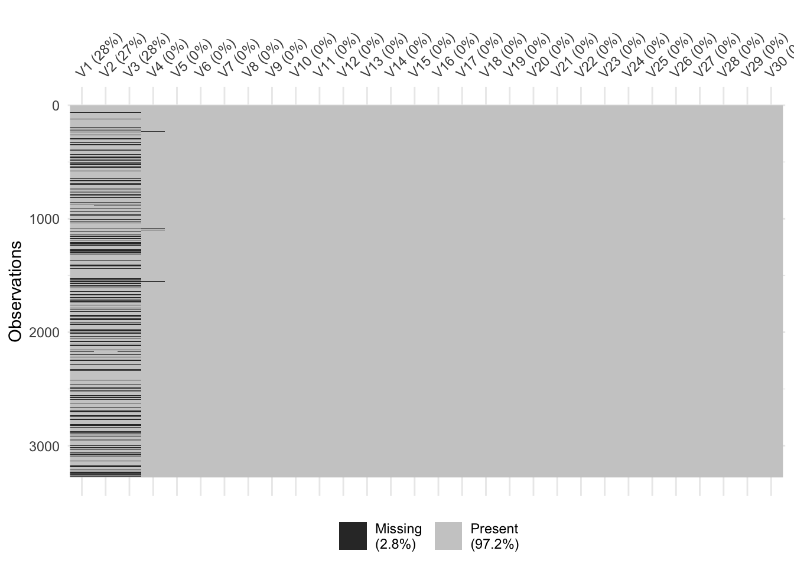

11 Comparaison d’algorithmes
Les chapitres précédents ont présenté plusieurs algorithmes permettant de répondre à un problème posé, le plus souvent de classification supervisée. Se pose bien entendu la question de choisir un unique algorithme. Etant donné un échantillon \(\mathcal D_n=\{(x_1,y_1),\dots,(x_n,y_y)\}\) on rappelle qu’un algorithme de prévision est une fonction \[g:\mathcal X\times(\mathcal X\times \mathcal Y)^n\to\mathcal Y\] qui, à une nouvelle observation \(x\in\mathcal X\) renverra la prévision \(g(x,\mathcal D_n)\) calculée à partir de l’échantillon \(\mathcal D_n\). Cette fonction \(g\) peut contenir tout un tas d’étapes comme :
- la gestion des données manquantes
- une procédure de choix de variables
- une méthode pour ré-équilibrer les données
- des procédures pour calibrer des paramètres (qui peuvent éventuellement inclure des validations croisées)
- …
Le machine learning se focalisant sur la capacité d’un algorithme à bien prédire, les stratégies classiques pour choisir un algorithme vont (une fois de plus) consister à évaluer le pouvoir prédictif de chaque algorithme. Il n’y a rien de bien nouveau puisque cela va reposer sur les techniques présentées aux chapitres @ref(caret) :
- choisir un ou plusieurs critères (erreur de classification, AUC, \(F_1\)-score…)
- choisir une procédure de ré-échantillonnage pour estimer ce critère (validation hold-out, validation croisée, OOB…).
Nous proposons de développer une stratégie pour choisir un algorithme sur le jeu de données Internet Advertisements Data Set disponible sur cette page https://archive.ics.uci.edu/ml/datasets/internet+advertisements. Le problème est d’identifier la présence d’une image publicitaire sur des pages webs. Il comporte
ad.data <- read.table("data/ad_data.txt",header=FALSE,sep=",",dec=".",na.strings = "?",strip.white = TRUE)
dim(ad.data)
## [1] 3279 1559Ce jeu de données contient 1558 variables explicatives, ces variables contiennent différentes caractériques de la page web (voir le site où sont présentées les données pour plus d’information). La dernière variable est la variable à expliquer, elle vaut ad. si présence d’une publicité, nonad. sinon.
names(ad.data)[ncol(ad.data)] <- "Y"
ad.data$Y <- as.factor(ad.data$Y)
summary(ad.data$Y)
## ad. nonad.
## 459 2820Ce jeu de données contient des données manquantes.
sum(is.na(ad.data))
## [1] 2729On peut les visualiser avec
library(visdat)
vis_miss(ad.data[,1:30])
On remarque que :
- 920 lignes
- 4 colonnes (les 4 premières)
ont au moins une valeur manquante.
apply(is.na(ad.data),1,any) %>% sum()
## [1] 920
var.na <- apply(is.na(ad.data),2,any)
names(ad.data)[var.na]
## [1] "V1" "V2" "V3" "V4"On choisit de retirer ces 4 variables de l’analyse (il faudrait peut-être réfléchir un peu plus…).
ad.data1 <- ad.data[,var.na==FALSE]
dim(ad.data1)
## [1] 3279 1555
sum(is.na(ad.data1))
## [1] 0On se retrouve donc en présence de 3279 individus et 1554 variables explicatives. On construit la matrice des X et le vecteur des Y qui sont nécessaires pour certaines fonctions comme glmnet :
X.ad <- model.matrix(Y~.,data=ad.data1)[,-1]
Y.ad <- ad.data1$Yet on transforme la variable cible en 0-1 pour utiliser gbm:
ad.data2 <- ad.data1 %>% mutate(Y=recode(Y,"ad."=0,"nonad."=1))On souhaite comparer les algorithmes présentés précédemment. Ils nécessitent les packages suivants
library(e1071)
library(caret)
library(rpart)
library(glmnet)
library(ranger)
library(gbm)On commence tout d’abord par représenter un algorithme par une fonction R qui admettra en entrée un jeu de données et renverra une unique prévision pour de nouveaux individus. On illustre ces fonctions pour prédire ce nouvel individu.
newX <- ad.data1[1000,]
newX.X <- matrix(X.ad[1000,],nrow=1)On stockera les prévisions dans l’objet suivant
prev <- tibble(algo=c("SVM","arbre","ridge","lasso","foret","ada","logit"),prev=0)SVM à noyau gaussien où le choix des paramètres du noyau se fait par validation croisée 4 blocs :
prev.svm <- function(df,newX){ C <- c(0.01,1,10) sigma <- c(0.1,1,3) gr <- expand.grid(C=C,sigma=sigma) ctrl <- trainControl(method="cv",number=4) cl <- makePSOCKcluster(3) registerDoParallel(cl) res.svm <- train(Y~.,data=df,method="svmRadial",trControl=ctrl, tuneGrid=gr,prob.model=TRUE) stopCluster(cl) predict(res.svm,newX,type="prob")[2] } prev[1,2] <- prev.svm(ad.data1,newX)Arbre de classification où l’élagage est fait selon la procédure CART présentée dans le Chapitre 6.
prev.arbre <- function(df,newX){ arbre <- rpart(Y~.,data=df,cp=1e-8,minsplit=2) cp_opt <- arbre$cptable %>% as.data.frame() %>% filter(xerror==min(xerror)) %>% dplyr::select(CP) %>% slice(1) %>% as.numeric() arbre.opt <- prune(arbre,cp=cp_opt) predict(arbre,newdata=newX,type="prob")[,2] } prev[2,2] <- prev.arbre(ad.data1,newX)Lasso et Ridge où le paramètre de régularisation est choisi par validation croisée 10 blocs en minimisant la déviance binomiale :
prev.ridge <- function(df.X,df.Y,newX){ ridge <- cv.glmnet(df.X,df.Y,family="binomial",alpha=0) as.vector(predict(ridge,newx = newX,type="response")) } prev.lasso <- function(df.X,df.Y,newX){ lasso <- cv.glmnet(df.X,df.Y,family="binomial",alpha=1) as.vector(predict(lasso,newx = newX,type="response")) } prev[3,2] <- prev.ridge(X.ad,Y.ad,newX.X) prev[4,2] <- prev.lasso(X.ad,Y.ad,newX.X)Forêt aléatoire avec les paramètres par défaut :
prev.foret <- function(df,newX){ foret <- ranger(Y~.,data=df,probability=TRUE) predict(foret,data=newX,type="response")$predictions[,2] } prev[5,2] <- prev.foret(ad.data1,newX)Adaboost et logitboost avec le nombre d’itérations choisi par validation croisée 5 blocs :
prev.ada <- function(df,newX){ ada <- gbm(Y~.,data=df,distribution="adaboost",interaction.depth=2, bag.fraction=1,cv.folds = 5,n.trees=500) nb.it <- gbm.perf(ada,plot.it=FALSE) predict(ada,newdata=newX,n.trees=nb.it,type="response") } prev.logit <- function(df,newX){ logit <- gbm(Y~.,data=df,distribution="bernoulli",interaction.depth=2, bag.fraction=1,cv.folds = 5,n.trees=500) nb.it <- gbm.perf(logit,plot.it=FALSE) predict(logit,newdata=newX,n.trees=nb.it,type="response") } prev[6,2] <- prev.ada(ad.data2,newX) prev[7,2] <- prev.logit(ad.data2,newX)
On peut visualiser la prévision de chaque algorithme
prev
## # A tibble: 7 × 2
## algo prev
## <chr> <dbl>
## 1 SVM 0
## 2 arbre 0
## 3 ridge 0
## 4 lasso 0
## 5 foret 0
## 6 ada 0
## 7 logit 0Exercice 11.1 (Choix d’un algorithme par validation croisée) Choisir un algorithme parmi les précédents en utilisant comme critère l’erreur de classification ainsi que la courbe ROC et l’AUC. On pourra faire une validation croisée 10 blocs (même si ça peut être un peu long…).
On commence par définir les blocs
On effectue la validation croisée pour obtenir un score pour chaque individu :
On ajoute à cette matrice score les valeurs observées que l’on recode en 0-1 :
On peut maintenant déduire tous les critères en confondant les valeurs prédites aux valeurs observées.
Courbe ROC
AUC
Erreur de classification
On remarque que la svm possède les plus mauvais résultats. Cela ne signifie pas forcément que la méthode est mauvaise, peut-être que les choix qui ont été faits (noyaux gaussien, et grilles de paramètres) ne sont pas pertinents. Les arbres se révèlent également peu efficaces pour la courbe ROC et l’AUC, il est rare que les arbres soient parmi les meilleurs algorithmes contrairement au gradient boosting et aux forêts aléatoires. En terme d’AUC, la régression ridge et les forêts aléatoires se distinguent avec de très bonnes performances. On choisira l’algorithme final parmi ces deux là.
Exercice 11.2 (Choix d’un algorithme de ré-équilibrage par validation croisée) On considère le même jeu de données que précédemment. Choisir un algorithme de ré-équilibrage par validation croisée. Il s’agira de combiner des méthodes de ré-équilibrage (random over/under sampling, smote, tomek…) avec des algorithmes de prévision de machine learning. On pourra se restreindre au modèle logistique avec calcul des estimateurs par maximum de vraisemblance, ridge, lasso…
On recode les modalités de \(Y\) en 0-1 :
On définit d’abord les 10 blocs pour la validation croisée.
Puis on crée une liste SCORE de longueur 5 dont chaque élément contiendra un dataframe avec les probabilités que l’image soit une publicité estimées par chaque méthode pour chaque algorithme de ré-équilibrage.
On peut maintenant faire la validation croisée, pour chaque valeur de k entre 1 et 10 :
on calcule les échantillons d’apprentissage et de test
on ré-équilibre les données d’apprentissage uniquement
on entraîne les algorithmes logistique (MV), lasso et ridge sur tous les échantillons d’apprentissage. Le paramètre de régularisation des méthode lasso et ridge est sélectionné en faisant une validation croisée 10 blocs, c’est-à-dire que l’échantillon d’apprentissage est coupé en 10 blocs pour choisir ce paramètre
on calcule enfin les probabilités estimées que l’image soit une publicité pour chaque individu de l’échantillon test
Le code entier se trouve ci-dessous :
On assemble tous les résultats dans un seul dataframe de 4 colonnes qui contiendra une colonne :
methpour le nom de l’algorithme de ré-équilibrage ;obspour les valeurs observées de \(Y\) pour chaque individu (0 ou 1) ;algopour l’algorithme de prévision (logistique, lasso, ridge) ;scorepour la probabilité que l’image soit une publicité estimée par l’algorithme.
On pourra déduire de cette matrice différents critères de performance. Nous commençons par l’AUC qui peut se calculer directement à partir des valeurs de score
La plupart des autres critères (accuracy, kappa de Cohen…) nécessitent d’avoir les groupes prédits par l’algorithme. Ces prévisions s’obtiennent en fixant un seuil \(s\) entre 0 et 1 et en prédisant groupe 1 si la probabilité est plus grande que \(s\), 0 sinon. On peut utiliser des méthodes de choix automatique de seuil mais, par souci de concision, nous présentons les résultats pour le seuil de 0.5. On crée donc une nouvelle colonne prev qui contiendra les groupes prédits :
On peut maintenant en déduire :
l’accuracy
le balanced accuracy
le \(F_1\) score
le \(\kappa\) de Cohen
Il n’est pas facile de synthétiser tous ces résultats. Plusieurs tendances semblent néanmoins se dégager :
- le modèle logistique est clairement moins performant que les algorithmes ridge et lasso. Cela s’explique par le nombre important de variables dans le modèle. Les méthodes régularisées sont plus pertinentes dans ce contexte.
- les performances des régressions ridge et lasso sont proches, avec une préférence pour le ridge.
- l’apport des méthodes de ré-échantillonnage est discutable sur cet exemple. On remarque en effet les algorithmes appliqués sur les données brûtes (non ré-équilibrées) sont performants. Le ré-équilibrage peut néanmoins améliorer certains critères comme par exemple le balanced accuracy pour lequel les méthodes de sur-échantillonnage (random oversampling et smote) permettent d’améliorer.
Nous terminons en présentant quelques résultats pour d’autres valeurs de seuil. En effet, nous avons ici calculer la plupart des critères en utilisant le seuil de 0.5 pour déduire les groupes prédits à partir des valeurs de score. Il est souvent intéressant de visualiser ces critères pour différentes valeurs de seuil, on utilise alors des grilles de score qui consistent à présenter les valeurs de critère en fonction des scores. Nous comparons ici les grilles de score de la méthode ridge appliquée sur les données brûtes et les données ré-échantillonnées par random oversampling et smote. Ces grilles peuvent aider l’utilisateur à choisir le seuil de prévision en fonction des objectifs métiers. On créé tout d’abord une fonction qui permettra d’obtenir les grilles de score :